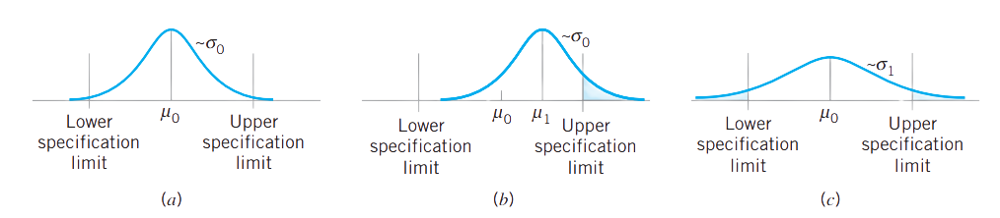
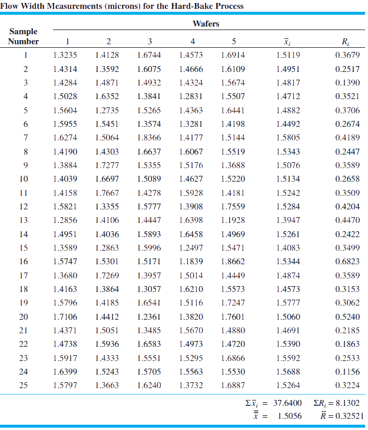
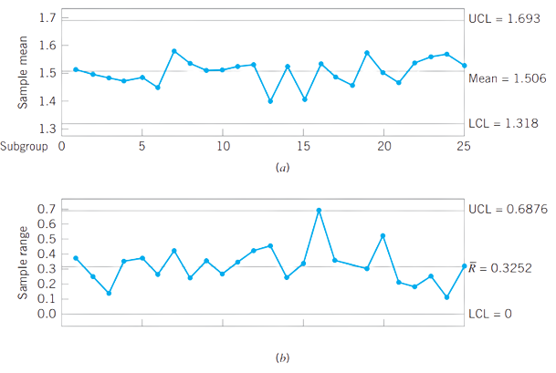
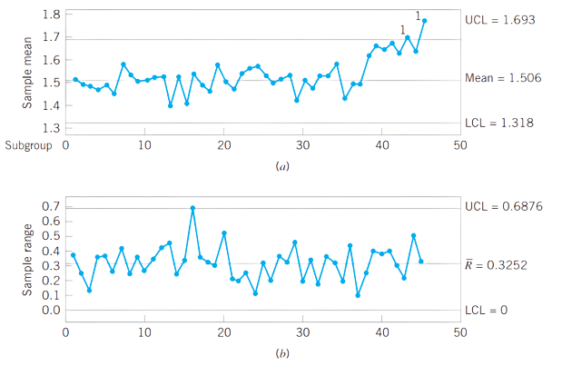
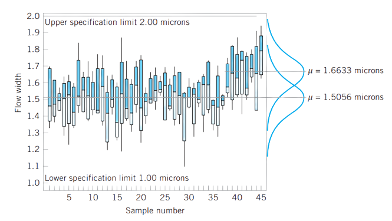
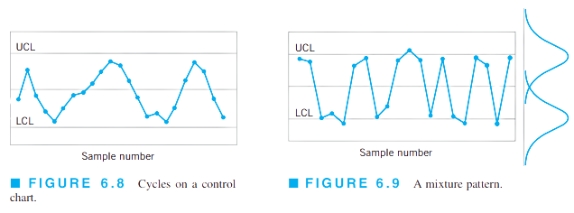
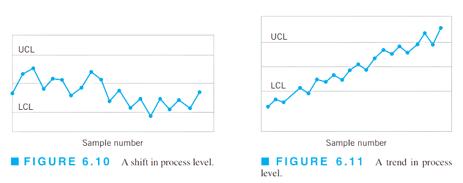
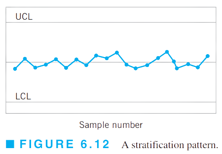

Diagramas de control para variables
IEST 422 - 2022/02
Eloy Alvarado Narváez
Universidad de Valparaíso
13/10/22
Introducción
Muchas características de interés pueden ser expresadas en términos de una medición numérica. Un característica de calidad medible, como dimensiones, peso, volumen, etc, la llamamos variable.
Los diagramas de control son una de las herramientas más utilizadas en el proceso DMAIC (Define, Measure, Analyze, Improve and Control) en la etapa de de análisis y de control.
Cuando tratamos con características de la calidad que son variables, es usualmente necesario monitorear su valor medio y variabilidad. El monitoreo es usualmente realizado mediante diagramas de control, en donde usualmente se les llama diagramas de control de \(\overline{x}\) y diagramas de control de \(s\), respectivamente.
Alternativamente, es posible utilizar un diagrama de control para el rango para estudiar la variabilidad (diagramas de control de R)
Ejemplo diagramas
Diagramas de control para la media y el rango
Fundamentos estadísticos para los diagramas
Supongamos que la característica de calidad está normalmente distribuida con media \(\mu\) y desviación estándar \(\sigma\), ambos conocidos. Si \(x_1,x_2,\dots,x_n\) es una muestra de tamaño \(n\), entonces la media de esta muestra es:
\[\overline{x}=\dfrac{x_1,x_2,\dots,x_n}{n}\]
y sabemos que \(\overline{x}\) es normal con media \(\mu\) y desviación estándar \(\sigma_{\overline{x}}=\sigma/\sqrt{n}\). Además, \(1-\alpha\) es la probabilidad de que una media muestral esté entre:
\[[\mu-Z_{\alpha/2} \sigma_{\overline{x}};\mu+Z_{\alpha/2} \sigma_{\overline{x}}]\]
Por lo que, si \(\mu\) y \(\sigma\) son conocidos, la ecuación anterior puede ser usada para determinar los límites de control para medias muestrales.
Fundamentos estadísticos para los diagramas: continuación
En lo anterior, asumimos que la distribución de la característica de la calidad es normal. Sin embargo, el resultado anterior son también aproximadamente correctos, incluso en los casos en donde la distribución subyacente no cumple el supuesto distribucional, debido al teorema de límite central.
En la práctica, usualmente no sabremos \(\mu\) ni \(\sigma\), por que estos valores deben ser estimados de muestra preliminares o subgrupos obtenidos de procesos que se piensan están bajo control. Estas estimaciones deben usualmente ser basadas en 20 a 25 muestras mínimo.
Supongamos que \(m\) muestras están disponibles, cada una conteniendo \(n\) observaciones de la característica de calidad. Típicamente, \(n\) será pequeño (\(\sim4,5,6\)). Sea \(\overline{x}_1,\overline{x}_2,\dots,\overline{x}_m\) las medias de cada una de las muestras. Entonces el mejor estimador de \(\mu\), la media del proceso, es el promedio:
\[\overline{x}=\dfrac{\overline{x}_1+\overline{x}_2+\dots+\overline{x}_m}{m}\]
Por lo que \(\overline{x}\) será usado como línea central en el diagrama de control para la media.
Fundamentos estadísticos para los diagramas: continuación
Para construir los límites de control, debemos estimar la desviación estándar \(\sigma\). Es posible estimar la desviación estándar poblacional desde las desviaciones estándar muestrales o desde los rangos de \(m\) muestras. Utilizando el método de rangos: Si \(x_1,x_2,\dots,x_n\) es una muestra de tamaño \(n\), entonces el rango de la muestra es la diferencia entre el valor máximo y mínimo.
\[R=x_{\max}-x_{\min}\]
Luego, sean \(R_1,R_2,\dots,R_m\) los rangos de las \(m\) muestras. El rango promedio será:
\[\overline{R}=\dfrac{R_1+R_2+\dots+R_m}{m}\]
Límites de control: media y d.e.
Por lo anterior, los límites de control y línea central para un diagrama de control para la media estarán dados por:
\[\begin{align*} UCL&= \overline{x}+A_2 \overline{R}\\ CL&= \overline{x}\\ LCL&= \overline{x}-A_2 \overline{R} \end{align*}\]
y para el diagrama de control para el rango:
\[\begin{align*} UCL&= D_4 \overline{R}\\ CL&= \overline{R}\\ LCL&= D_3 \overline{R} \end{align*}\]
En donde \(A_2,D_3\) y \(D_4\) son valores tabulados. (revisar como se llegan a estas ecuaciones)
Fases para la aplicación de los diagramas de control: Etapa I
La primera fase de la aplicación de estos diagramas, una vez construido los diagramas de control desde muestras preliminares, es tratar estos límites de control como límites de control a prueba.
Estos límites nos permitirán determinar si:
El proceso estaba en control cuando las \(m\) muestras preliminares fueron seleccionadas.
El proceso estaba en control cuando las \(m\) muestras preliminares fueran obtenidas.
Graficar los valores de \(\overline{x}\) y \(R\) para cada muestra en el diagrama y analizar los resultados.
Si la hipótesis de que los datos de los cuales construimos nuestros límites de control a prueba provienen desde datos controlados, es rechazada, entonces debemos revisar nuestros límites de control a prueba.
Ejemplo
Ejemplo: continuación
Comenzando con el diagrama de control \(R\), la línea central será:
\[\overline{R}=\dfrac{\sum_{i=1}^{25}R_i}{25}=\dfrac{8.1302}{25}=0.32521\]
Para muestras de tamaño \(n=5\), se tiene que \(D_3=0\) y \(D_4=2.114\). Por lo que, los límites de control para el diagrama \(R\) serán:
\[\begin{align*} LCL&=\overline{R}D_3=0\\ UCL&=\overline{R}D_4=0.32521(2.114)=0.68749 \end{align*}\]
Ejemplo: continuación
Para el diagrama de control para la media, la línea central será:
\[\overline{x}=\dfrac{\sum_{i=1}^{25}\overline{x}_i}{25}=\dfrac{37.64}{25}=1.5056\]
Para muestras de tamaño \(n=5\), se tiene que \(A_2=0.577\), Por lo que, los límites de control para el diagrama \(\overline{x}\) serán:
\[\begin{align*} LCL&=\overline{x}-A_2\overline{R}=1.5056-0.5777*0.32521=1.31795\\ UCL&=\overline{x}+A_2\overline{R}=1.5056+0.5777*0.32521=1.69325 \end{align*}\]
Ejemplo: continuación
Estimación de la capacidad del proceso
Los diagramas de control para la media y el rango nos entregan información sobre el desempeño o capacidad del proceso. Para el ejemplo, desde el diagrama de control para la media nos permite estimar el flujo medio del proceso en estudio como \(\overline{x}=1.5056\) micrones. Y la desviación estándar del proceso puede ser estimada como:
\[\hat{\sigma}=\dfrac{\overline{R}}{d_2}=\dfrac{0.32521}{2.326}=0.1398 \text{ micrones}\]
donde el valor de \(d_2\) para muestras de tamaño 5 está dado por tabla.
Estimación de la capacidad del proceso: continuación
Así, si asumimos que la variable en estudio está normalmente distribuida, con media 1.5056 y desviación estándar 0.1398, podemos estimar la fracción de productos defectuosas (dado un límite de especificación \(1.5 \pm 0.5\)) como:
\[\begin{align*} p&=\mathbb{P}(x<1)+\mathbb{P}(x>2)\\ &=\Phi\left( \dfrac{1-1.5056}{0.1398}\right)+ 1- \Phi\left( \dfrac{2-1.5056}{0.1398}\right)\\ &=\Phi(-3.61660)+1-\Phi(3.53648)\\ &\approx 0.00015+1-0.9998\\ &\approx 0.00035\\ \end{align*}\]
que es equivalente a 350 partes por millón, o que \(0.035\%\) de los productos estarán fuera de los límites de especificación.
Estimación de la capacidad del proceso: continuación
Otra forma de expresar la capacidad del proceso es en términos de la relación de capacidad del proceso o PCR \(C_p\) por sus siglas en inglés (process capability ratio), obtenido como:
\[C_p=\dfrac{USL-LSL}{6\sigma}\]
Si no tenemos acceso a \(\sigma\) utilizaremos \(\hat{\sigma}\), obteniendo \(\hat{C}_p\). Para nuestro ejemplo, tendremos que \(\hat{\sigma}=0.1398\), luego:
\[\hat{C}_p=\dfrac{2-1}{6*0.1398}=\dfrac{1}{0.8388}=1.192\]
Estimación de la capacidad del proceso: continuación
El PCR \(C_p\) puede ser interpretado como:
\[P=\left( \dfrac{1}{C_p} \right) 100\%\]
es simplemente el porcentaje de la banda de especificación que el proceso utiliza. En nuestro ejemplo:
\[\hat{P}=\left( \dfrac{1}{\hat{C}_p} \right) 100\%=\left(\dfrac{1}{1.192}\right)100\%=83.89\]
Esto es, el proceso utiliza aproximadamente \(84\%\) de la banda de especificación.
Estimación de la capacidad del proceso: continuación

Revisión de los límites de control y línea central
Para el uso efectivo de diagramas de control se requiere implementar una revisión periódica de los límites de control y línea central. Usualmente se definen periodos regulares, ya sean 1 vez por semana, mes o cada cierto número de muestras.
En algunos casos se reemplazará la línea central con un valor objetivo (\(\overline{\overline{x}}_0\)). Si el diagrama de control para el rango está bajo control, este cambio nos será útil para cambiar la media del proceso a la media deseada.
Fases para la aplicación de los diagramas de control: Etapa II
Una vez los límites de control y línea central fueron establecidos y rectificados, usaremos el diagrama de control para monitorear la producción futura. Esta es la segunda etapa en el uso de diagramas de control.
Fases para la aplicación de los diagramas de control: Etapa II
Fases para la aplicación de los diagramas de control: Etapa II
El diagrama anterior se le conoce como diagrama de tolerancia, que nos ayuda a encontrar patrones en los datos. Se compone de diagramas de cajas o boxplot para las distintas muestras obtenidas.
Límites de control, límites de especificación y límites naturales de tolerancia.
Un punto que debe ser enfatizado es que no existe una conexión o relación entre los límites de control en los diagramas para la media y rango y los límites de especificación del proceso. Los límites de control están dados por la variabilidad natural del proceso, esto es, dependen de los límites naturales de tolerancia del proceso. En cambio, los límites de especificación son determinados externamente, estos pueden ser establecidos por gerencia, ingenieros, consumidores, etc. Sin embargo, se debe tener conocimiento de la variabilidad inherente del proceso cuando se determinan o establecen los límites de especificación.
No existe relación matemática o estadística entre los límites de control y límites de especificación
Subgrupos racionales
Los subgrupos racionales tienen un rol importante en los diagramas de control para la media y el rango. El diagrama de control para la media monitorea la calidad media del proceso (de la variable en estudio), por lo que, las muestras deben ser seleccionadas de tal manera que maximice la probabilidad de cambios en la media del proceso entre muestras, y así detectar más fácilmente los puntos u observaciones fuera de control.
En cambio, en el diagrama de control para el rango se mide la variabilidad dentro de una muestra, por lo que las muestras deben seleccionarse de modo que la variabilidad dentro de las muestras mida solo causas aleatorias.
En otras palabras, el diagrama de control para la media monitorea la variabilidad entre las muestras, mientras que el diagrama de control para el rango monitorea la variabilidad dentro de las muestras
Cambio del tamaño muestral
En lo anterior no hemos cambiado el tamaño muestral para la confección de diagramas de control para la media o rango. Sin embargo, existen situaciones en donde el tamaño de muestra no es constante. Usualmente, en este tipo de contexto, el tamaño de todas las muestras varía constantemente.
Cuando los tamaños de muestras cambian constantemente, los diagramas de control para la media y el rango no son usualmente utilizados, debido a que las líneas centrales cambiarán constantemente provocando interpretaciones erróneas.
Otra situación, es cuando deseamos realizar un cambio permanente en el tamaño de muestra debido a costos o el proceso exhibe buena estabilidad, y se desea utilizar menos recursos en su monitoreo. En este caso, es fácil recalcular los nuevos límites de control a partir de los antiguos sin recolectar muestras adicionales basadas en el nuevo tamaño de la muestra.
Cambio del tamaño muestral: continuación
Sean
\(\overline{R}_{old}\): rango medio de las muestras con tamaño de muestra antiguo
\(\overline{R}_{new}\): rango medio de las muestras con el nuevo tamaño de muestra
\(n_{old}\): tamaño de muestra antiguo
\(n_{new}\): tamaño de muestra nuevo
\(d_2(old)\): factor \(d_2\) para el tamaño de muestra antiguo
\(d_2(new)\): factor \(d_2\) para el nuevo tamaño de muestra
Cambio del tamaño muestral: continuación
Para el diagrama de control para la media, los nuevos límites de control estarán dados por:
\[\begin{align*} UCL&=\overline{x}+A_2\left(\dfrac{d_2(new)}{d_2(old)}\right)\overline{R}_{old}\\ LCL&=\overline{x}-A_2\left(\dfrac{d_2(new)}{d_2(old)}\right)\overline{R}_{old} \end{align*}\]
donde la línea central \(\overline{\overline{x}}\) no cambia y el factor \(A_2\) es seleccionado para el nuevo tamaño muestral.
Cambio del tamaño muestral: continuación
Para el diagrama de control para el rango, los nuevos límites de control estarán dados por:
\[\begin{align*} UCL&=D_4\left(\dfrac{d_2(new)}{d_2(old)}\right)\overline{R}_{old}\\ CL&=\overline{R}_{new}=\left(\dfrac{d_2(new)}{d_2(old)}\right)\overline{R}_{old}\\ LCL&=\max \left( 0,D_3\dfrac{d_2(new)}{d_2(old)}\overline{R}_{old}\right) \end{align*}\]
donde \(D_3\) y \(D_4\) son seleccionados para el nuevo tamaño muestral. (revisar ejemplo 6.2 Montgomery)
Diagramas de control basado en valores estándar
Cuando es posible especificar los valores estándar para la media y desviación estándar del proceso, podremos realizar los límites de control fácilmente como, para el diagrama de control para la media:
\[\begin{align*} UCL&=\mu+3\dfrac{\sigma}{\sqrt{n}}\\ CL&=\mu \\ LCL&=\mu-3\dfrac{\sigma}{\sqrt{n}} \end{align*}\]
La cantidad \(3/\sqrt{n}=A\), es una constante que depende de \(n\) que está tabulada. por lo que podemos reescribir lo anterior como:
\[\begin{align*} UCL&=\mu+A\sigma\\ CL&=\mu \\ LCL&=\mu-A\sigma \end{align*}\]
Diagramas de control basado en valores estándar: continuación
Para el diagrama de control para el rango. Recordando que \(\sigma=R/d_2\), donde \(d_2\) es la media de la distribución de los rangos relativos y, \(\sigma_R=d_3\sigma\), donde \(d_3\) es la desviación estándar de la distribución de los rangos relativos, se tiene que:
\[\begin{align*} UCL&=d_2\sigma+3d_3\sigma\\ CL&=d_2\sigma \\ LCL&=d_2\sigma-3d_3\sigma \end{align*}\]
Interpretación de los diagramas de control para la media y rango
En estos diagramas podremos encontrarnos con distintos patrones que usualmente ocurren, junto a sus causas frecuentes:
Patrones cíclicos: cambios sistemáticos del ambiente (temperatura, fatiga del operador, fluctuaciones de voltaje, etc)
Mixtura: “sobre-control”
Cambio en el nivel del proceso: nuevos trabajadores, cambio de metodología o maquinaria.
Tendencia: Fatiga del operador o supervisión.
Estratificación: Cálculo erróneo de límites de control, diferentes distribuciones en las muestras.
Interpretación de los diagramas de control para la media y rango
Interpretación de los diagramas de control para la media y rango
Interpretación de los diagramas de control para la media y rango
Diagramas de control para la media y desviación estándar
A pesar de que los diagramas de control para la media y el rango son los más utilizados, hay situaciones en las cuales es deseable estimar la desviación estándar del proceso directamente (en vez de indirectamente vía el rango). Generalmente, los diagramas de control para la media y la desviación estándar son preferidos cuando:
El tamaño de muestra \(n\) es moderadamente grande (\(n>10\)) o cuando
El tamaño de muestra \(n\) es variable.
¿Qué veremos la próxima semana?
- Diagramas de control para variables (finalización) e implementación en R.
¿Qué deben preparar para la próxima semana?
Leer capítulo 6 de Introduction to statistical quality control.
Revisar paquete qcc de R.
IEST 422 - Semana 7